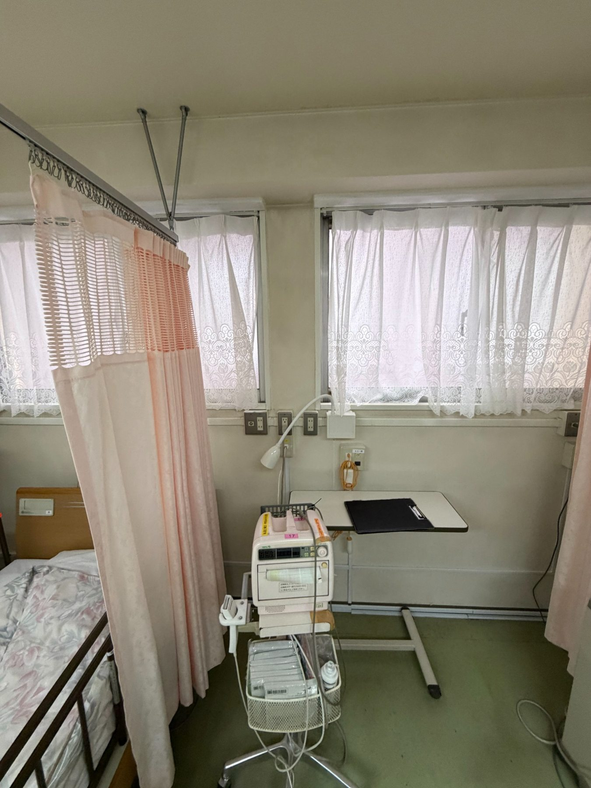
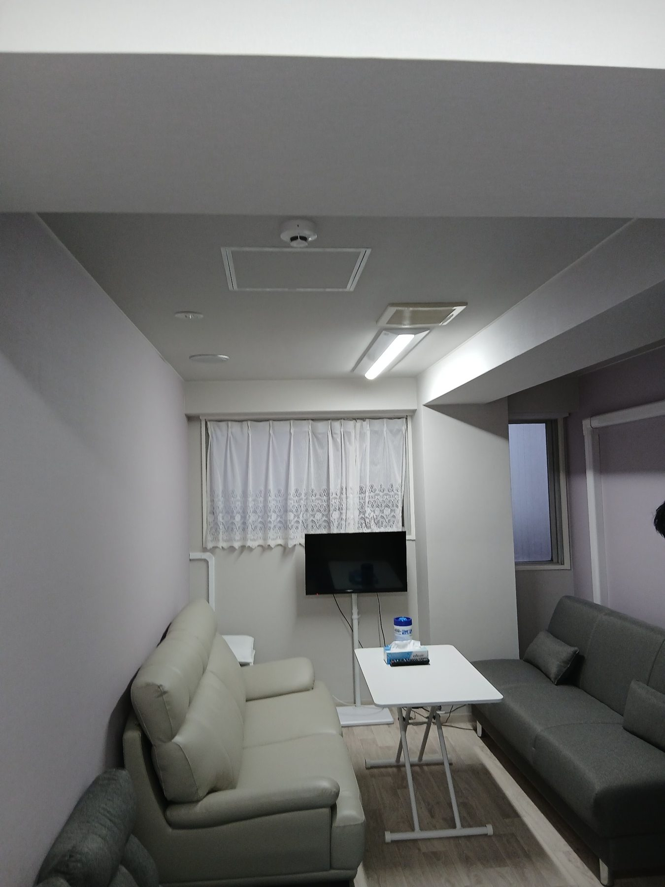
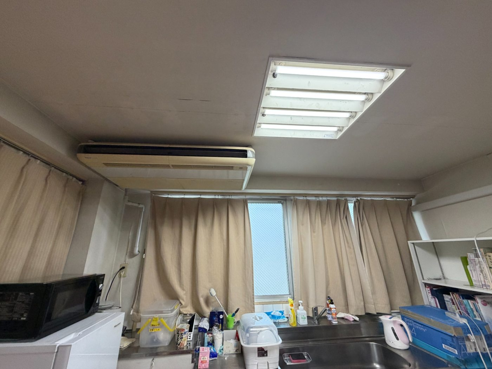
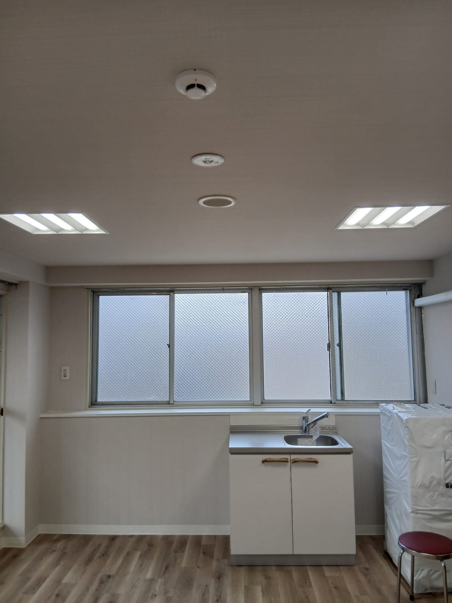

施工実績
施工前と施工後の写真で、空間の変化をご紹介します。品質と丁寧な仕上がりを大切にしています。
01｜室内改修
間仕切りカーテンやベッドが配置されていた空間が、ソファのある落ち着いた室内へ。施工前後の様子をご覧ください。
BEFORE施工前

AFTER施工後

02｜流し台のある室内の改修
設備や収納が並ぶ室内から、明るくすっきりとした印象の空間へ。壁面や床面の見え方も比較できます。
BEFORE施工前

AFTER施工後

※掲載写真は実際の施工事例です。写真の撮影方向・撮影条件は異なります。工事内容・価格は現場により異なります。